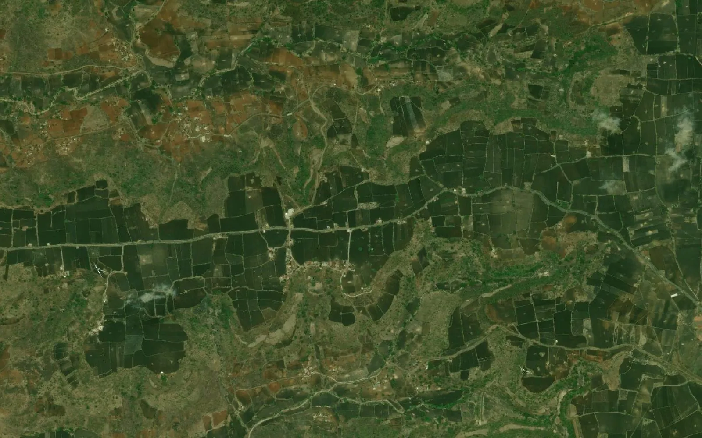

How to find a khasra number on a satellite map, step by step

Many people search for a khasra number on a satellite map: a landowner who wants to see a field from above, a project team listing plots inside a site, or a buyer who wants to match a number with the ground. The village map shows plot lines on a plain sheet, while satellite imagery shows the real land. Joining the two takes a few clear steps, explained here.
1. Start with the full plot identity
Note the state, district, tehsil or taluk, village and the plot number written exactly as in the record, including sub-numbers such as 123/4 or 45/2A. The same number often repeats in neighbouring villages, so the village name decides which plot you mean.
2. Get the village map in a georeferenced form
A village map on a screen is drawn on its own local sheet. To place it on satellite imagery it must be georeferenced, that is, fitted to real coordinates such as WGS 84 latitude / longitude or a UTM zone. After that, each plot can be drawn as a closed polygon carrying its number.
3. Open it in Google Earth
- Save the KML or KMZ file of the village on your computer or phone.
- Open it in Google Earth; the plots appear over the imagery.
- Use the search box for the plot number, or click a polygon to see its details.
- Switch the imagery date with the history slider to see older images of the same field.
The guide on opening a khasra KML in Google Earth shows the steps in detail.
4. Check that the lines sit on the ground
Look at roads, canals, field bunds and tank edges. If the plot lines follow them across the whole village, the placement is good. If the whole village looks shifted by a few metres in one direction, the placement needs correcting; if only one corner is off, the original sheet may be distorted there.
5. Read the details with care
Area, land type and holder come from the written record, not from the picture. A plot that looks empty from above may still be recorded as government land, and the reverse is also true. Use the map to find the place and the current record to confirm the facts.
See also how to check government land in a village.
6. Know the limits
Satellite images have their own small errors, imagery can be months or years old, and boundaries between plots are rarely visible from above. The result is a planning aid and not proof of title or an exact survey. Where a boundary decides ownership, compensation or construction, a DGPS or Total Station survey on the ground is the next step.
7. Doing it for many plots
For a project with dozens of villages, the same steps are repeated for each village and the results are merged into one layer, so a team can see every plot of the site together. The plot list can also be kept in an Excel sheet with village, number and area.
Check your village with the village checker, look at the state pages, read about the Rajasthan khasra map on satellite imagery, or ask for a quotation. BHU-NETRA Map Service is a private service and is not connected with any government.
Need khasra maps or a survey?
Georeferenced and digitized khasra maps in KML, DWG, SHP and Excel for 20 states, plus DGPS, Total Station, topographic and drone surveys. Single village orders welcome.